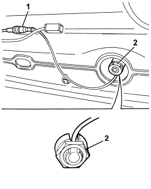
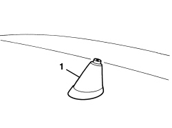

5570T27 AERIAL SUPPORT - R.R
- Path
- Procedures > 55 ELECTRICAL EQUIPMENT > 5570 ACCESSORIES > 5570T CAR RADIO AND CAR TELEPHONE > 5570T27 AERIAL SUPPORT - R.R
- Kind
- repair procedure (removal / refitting; the operation number is the code)
- Applies to
- all engines; all production periods
- Interactive page
- https://sloeber94.github.io/elrnDB/#/939011072
Applies to: all engines; all production periods
 Removing
Removing
 Refitting
RefittingFor the left and right sides.
Op. 7040H30 FRONT PILLAR TRIM (ONE), LEFT OR RIGHT - R.R.
Op. 7040L40 FRONT DOOR RUNNING BOARD (ONE), LEFT OR RIGHT - R.R.
Op. 7050A20 ONE-PIECE REAR SEAT CUSHION - R.R.
Op. 7040L44 REAR DOOR RUNNING BOARD (ONE), LEFT OR RIGHT - R.R.
Op. 7040H36 CENTRE PILLAR LOWER ELEMENT (ONE), LEFT OR RIGHT - R.R
For the left and right sides.
Op. 7040H38 CENTRE PILLAR UPPER ELEMENT (ONE), LEFT OR RIGHT - R.R
Op. 7050A19 REAR SEAT BACKREST - R.R
For the left and right sides.
Op. 7040H42 REAR PILLAR TRIM (ONE), LEFT OR RIGHT- R.R
Op. 7040E40 MODULAR FRONT COURTESY LIGHT - R R
Op. 7040E46 REAR COURTESY LIGHT ASSEMBLY - R R
Op. 7065C34 SUN BLIND (ONE), LEFT OR RIGHT - R.R.
Op. 7065C30 GRAB HANDLE (ONE) LEFT, RIGHT OR CENTRE PASSENGER COMPARTMENT INTERIOR - R.R
1. Working in the front courtesy light opening, undo the bolts fixing the roof lining.

Applies to: all engines; all production periods
1. Release the roof lining rear retaining buttons using the special tool.
Tool | Description | Function | Validity |
|---|---|---|---|
1823015000 | Knife | Retainer removal |
2. Working in the rear courtesy light opening, undo the fixing nut, then support the roof lining.
3. Pull the roof lining (3a) forwards and release the rear retainers (3b) from the housings (3c) for the roof lining.
4. Lower the roof lining.

Applies to: all engines; all production periods
1. Disconnect the connection for the aerial lead.
2. Undo the special nut with the washer.

Applies to: all engines; all production periods
1. Working from outside the vehicle, remove the aerial mounting and bridge.

Applies to: all engines; all production periods
Refitting
Removing- Check that the aerial is not damaged.
- Fit the bridge, position and aerial mounting and secure it from the inside using the special nut.
- Connect the connection for the aerial lead.
- Attach the roof lining to the rear retainers and support it.
- Tighten the nut fixing the roof lining in the rear courtesy light housing.
- Attach the rear etaining buttons.
- Working in the front courtesy light opening, tighten the bolts fixing the roof lining.
- Raise the front seat backrests into the end of travel position.
Op. 7065C30 GRAB HANDLE (ONE) LEFT, RIGHT OR CENTRE PASSENGER COMPARTMENT INTERIOR - R.R
Op. 7065C34 SUN BLIND (ONE), LEFT OR RIGHT - R.R.
Op. 7040E46 REAR COURTESY LIGHT ASSEMBLY - R R
Op. 7040E40 MODULAR FRONT COURTESY LIGHT - R R
Op. 7040H42 REAR PILLAR TRIM (ONE), LEFT OR RIGHT- R.R
Op. 7050A19 REAR SEAT BACKREST - R.R
Op. 7040H38 CENTRE PILLAR UPPER ELEMENT (ONE), LEFT OR RIGHT - R.R
Op. 7040H36 CENTRE PILLAR LOWER ELEMENT (ONE), LEFT OR RIGHT - R.R
Op. 7040L44 REAR DOOR RUNNING BOARD (ONE), LEFT OR RIGHT - R.R.
Op. 7050A20 ONE-PIECE REAR SEAT CUSHION - R.R.
Op. 7040L40 FRONT DOOR RUNNING BOARD (ONE), LEFT OR RIGHT - R.R.
Topics linked from this page (12)
- 7040E40 MODULAR FRONT COURTESY LIGHT - R R
- 7040E46 REAR COURTESY LIGHT ASSEMBLY - R R
- 7040H30 FRONT PILLAR TRIM (ONE), LEFT OR RIGHT - R.R.
- 7040H36 CENTRE PILLAR LOWER ELEMENT (ONE), LEFT OR RIGHT - R.R
- 7040H38 CENTRE PILLAR UPPER ELEMENT (ONE), LEFT OR RIGHT - R.R
- 7040H42 REAR PILLAR TRIM (ONE), LEFT OR RIGHT- R.R
- 7040L40 FRONT DOOR RUNNING BOARD (ONE), LEFT OR RIGHT - R.R.
- 7040L44 REAR DOOR RUNNING BOARD (ONE), LEFT OR RIGHT - R.R.
- 7050A19 REAR SEAT BACKREST - R.R
- 7050A20 ONE-PIECE REAR SEAT CUSHION - R.R.
- 7065C30 GRAB HANDLE (ONE) LEFT, RIGHT OR CENTRE PASSENGER COMPARTMENT INTERIOR - R.R
- 7065C34 SUN BLIND (ONE), LEFT OR RIGHT - R.R.
Topics that link to this page (16)
- E3510 RADIO - WIRING DIAGRAM
- E3510 RADIO - COMPONENT LOCATION
- E3510 RADIO - WIRING DIAGRAM
- E3510 RADIO - COMPONENT LOCATION
- E3510 RADIO - WIRING DIAGRAM
- E3510 RADIO - COMPONENT LOCATION
- E3510 RADIO - WIRING DIAGRAM
- E3510 RADIO - COMPONENT LOCATION
- E3510 RADIO - WIRING DIAGRAM
- E3510 RADIO - COMPONENT LOCATION
- E3510 RADIO - WIRING DIAGRAM
- E3510 RADIO - COMPONENT LOCATION
- E3570 INTEGRATED RADIOPHONE - WIRING DIAGRAM
- E3570 INTEGRATED RADIO PHONE - COMPONENT LOCATION
- E4091 CONNECT - WIRING DIAGRAM
- E4091 CONNECT - COMPONENT LOCATION